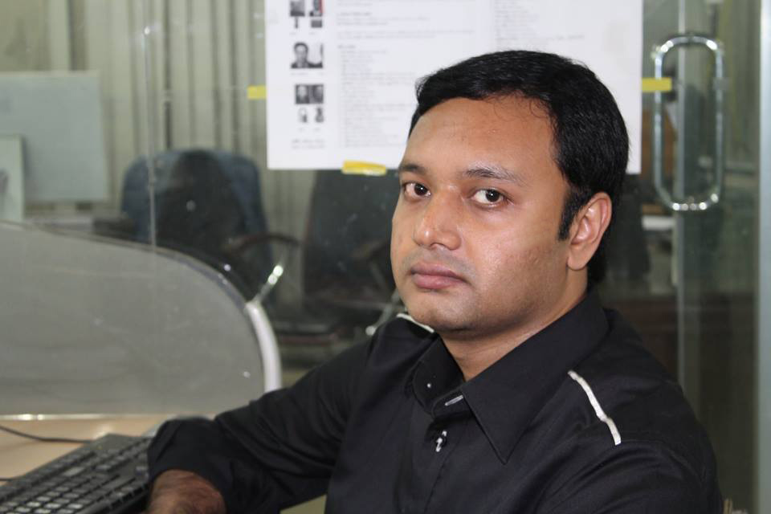

Meet Rezowan Karim — AI Content Creator, Scriptwriter & News Editor based in Dhaka, Bangladesh.

I'm Rezowan Karim — a digital storyteller who sits at the intersection of journalism, creativity and artificial intelligence. Based in Dhaka, I work with AI tools to produce content that moves people: documentaries that educate, advertisements that convert, music videos that resonate, and stories that stay with you long after the screen goes dark.
Before AI became mainstream, I was already deep in the world of news and media. That background in journalism taught me one thing above everything else — the power of a well-told story. Today, I channel that same instinct into every AI project I create.
The year was 2023. Like many curious minds, I stumbled into the world of AI through ChatGPT — and I was immediately hooked. Not just by what it could write, but by what it made possible. Then came Pika. My first AI-generated video flickered to life on a screen, and I knew — this changes everything.
First steps with ChatGPT for scripting. Pika Labs for video generation. Pixverse AI for more dynamic visuals. A journalist learning a completely new language.
Expanded into Hailuo and Runway for cinematic-quality output. Started producing full AI documentaries, advertisements and music videos for YouTube channels across Bangladesh.
Now working with the most advanced tools available: Google VEO, Sora, Kling, Seedance, MiniMax for video; Claude and Gemini for deep research and scriptwriting; ChatGPT for video prompt engineering; Flux, Seedream, Nano Banana and more for image generation. In just over two years, 300+ projects delivered.
Bangladesh has incredible stories waiting to be told — and for the first time in history, a single creator with the right tools can tell them at a cinematic scale.
I believe AI doesn't replace human creativity. It amplifies it. Every script I write, every prompt I craft, every visual I generate — it starts with a human idea and a genuine desire to connect with an audience.
My journalism background means I approach every project with research, accuracy and narrative structure. My AI toolkit means I can bring that vision to life faster, more affordably and more beautifully than traditional production ever allowed.
AI Projects Completed
Years of Experience
Services Offered
AI Tools Mastered